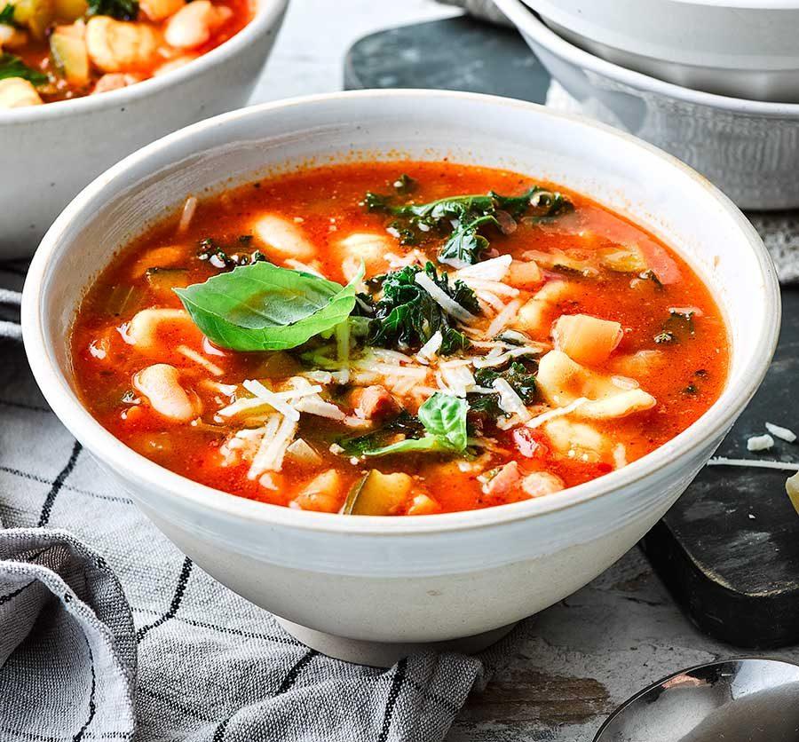

Minestrone

Description
Warm up with this vegetarian minestrone soup! This classic minestrone soup recipe is healthy, easy to make, and tastes incredible. It’s vegan, too, if you don’t top it with cheese. Recipe yields 6 bowls or 8 cups of soup.
Ingredients
- 4 tablespoons extra-virgin olive oil, divided
- 1 medium yellow onion, chopped
- 2 medium carrots, peeled and chopped
- 2 medium ribs celery, chopped
- ¼ cup tomato paste
- 2 cups chopped seasonal vegetables (potatoes, yellow squash, zucchini, butternut squash, green beans or peas all work)
- 4 cloves garlic, pressed or minced
- ½ teaspoon dried oregano
Steps
- Warm 3 tablespoons of the olive oil in a large Dutch oven or stockpot over medium heat. Once the oil is shimmering, add the chopped onion, carrot, celery, tomato paste and a pinch of salt. Cook, stirring often, until the vegetables have softened and the onions are turning translucent, about 7 to 10 minutes.
- Add the seasonal vegetables, garlic, oregano and thyme. Cook until fragrant while stirring frequently, about 2 minutes.
- Pour in the diced tomatoes and their juices, broth and water. Add the salt, bay leaves and red pepper flakes. Season generously with freshly ground black pepper.
- Raise heat to medium-high and bring the mixture to a boil, then partially cover the pot with the lid, leaving about a 1” gap for steam to escape. Reduce heat as necessary to maintain a gentle simmer.
- Cook for 15 minutes, then remove the lid and add the pasta, beans and greens. Continue simmering, uncovered, for 20 minutes or until the the pasta is cooked al dente and the greens are tender.
- Remove the pot from the heat, then remove the bay leaves. Stir in the lemon juice and remaining tablespoon of olive oil. Taste and season with more salt (I usually add about ¼ teaspoon more) and pepper until the flavors really sing. Garnish bowls of soup with grated Parmesan, if you’d like.
Homepage